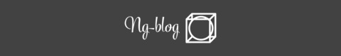

<div class="header">
    <div class="left-nav">
      <button routerLink="" mat-button color="primary">Home</button>
      <!-- Intended to implement Authorization aswell, therefor the disabled directive -->
      <button routerLink="make-blog-post" [disabled]="false"  mat-button color=primary>Add Blog Post</button>
    </div>
    <div class="right-nav">
        
    </div>
</div>